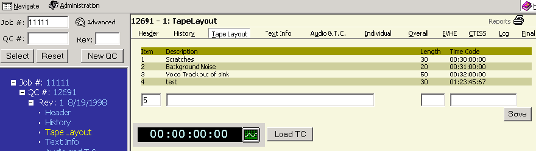
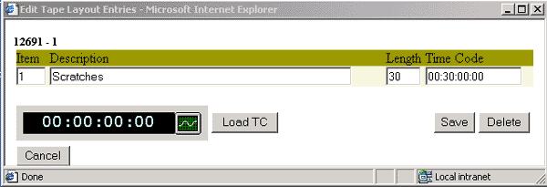

Alt + t then ENTER will take you to this page or clicking on TAPE LAYOUT in the menu bar on the right side. You can also click on the word TAPE LAYOUT in the Tree Frame (blue area).
1A.
This page displays the time code data. It loads stored data as well as having the ability to capture current time code. The user can type a description and length as desired. After entering the information please click the SAVE button to save your data
To modify an existing entry click on that entry. For example click on the SCRATCHES entry under description. You will get a window that appears like example 1B. In this screen the previous entry can be modified or deleted. To exit the screen without changes click the CANCEL button. Time code can be obtained by clicking on the LOAD TC button. To save any changes click the SAVE button.

.